How it works
Four steps, in the app or with beacon. They are the same engine.
Build a pack, save versions, branch and roll back. Publish, and your servers update and restart themselves. Players get told in game.
Windows, macOS and Linux. Open source, MIT. Alpha: expect rough edges.
beacon CLI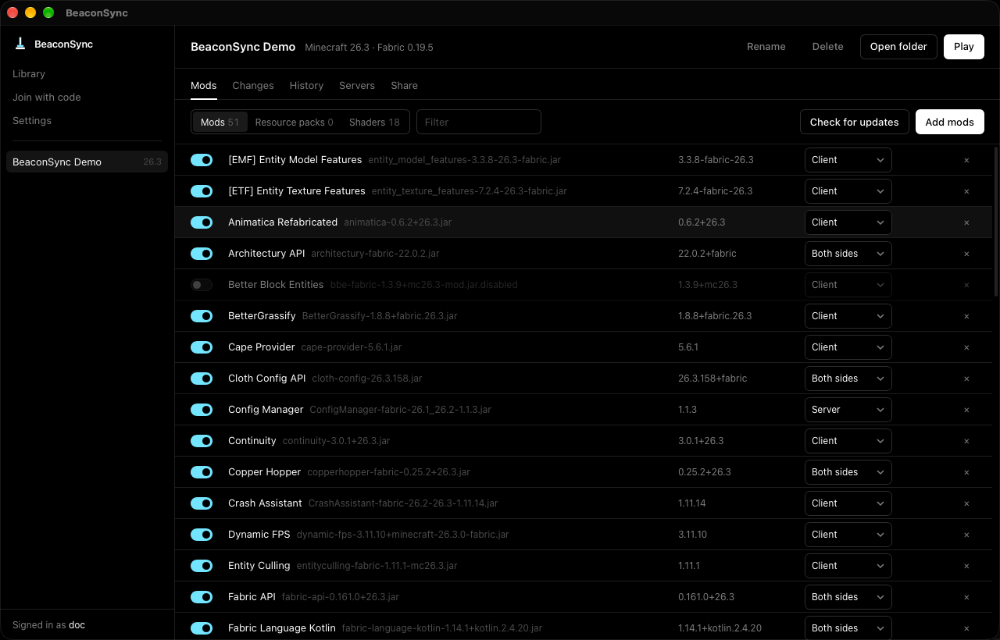
Four steps, in the app or with beacon. They are the same engine.
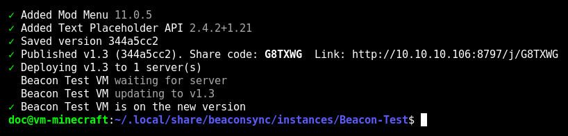
Start a pack or import one, then add mods from Modrinth.
beacon new "My Pack" --mc 1.21.1 --loader fabric
beacon add sodium
See what changed, undo what you don't want, save the rest.
beacon status
beacon save -m "Add Sodium"
Release it. Friends join with a share code or link.
beacon publish v1.0
Send it to one, several or all servers.
beacon deploy
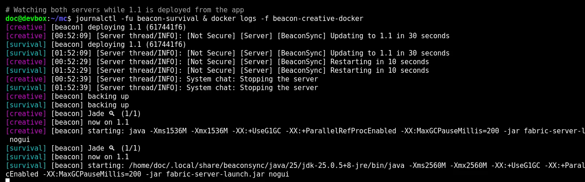
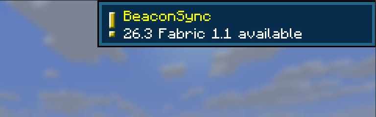
Your packs and your Prism instances in one list. Press Play: Prism Launcher is downloaded the first time and the game starts. An installed Prism is used instead, with its accounts.
.mrpack, CurseForge zips, Prism exports, existing Prism instances.
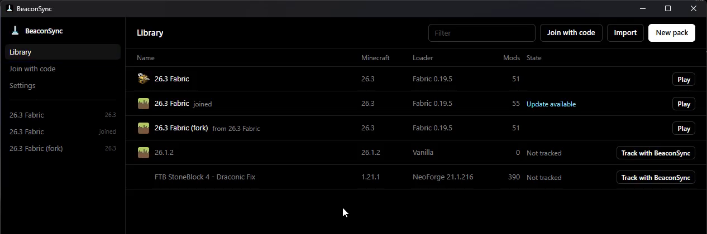
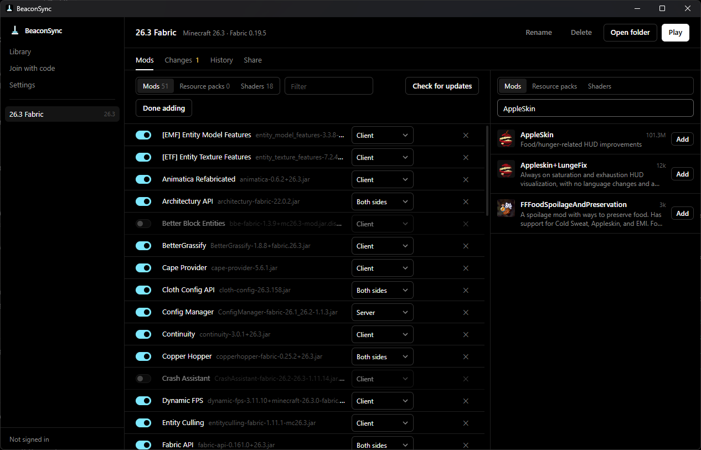
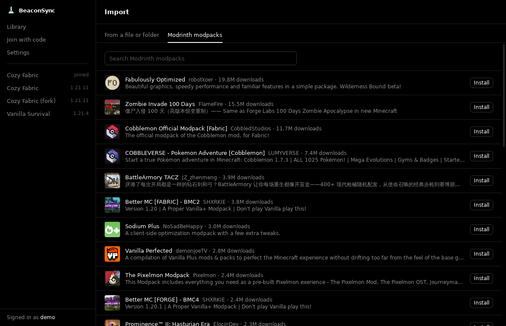
Every save is a version you can go back to. Branch to try something, merge it if it works. Mods are matched by project, so an updated mod shows as one change.
beacon log | branch | switch | merge
beacon restore | reset | discard
beacon updates --apply # newer Modrinth versions
beacon upstream --pull # merge the pack you forked
beacon rollback v1.0 # for players and servers too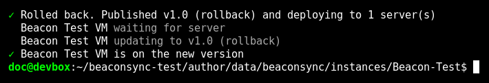
beacon rollback v1.0, start to finish.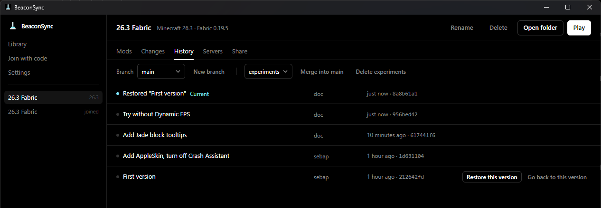
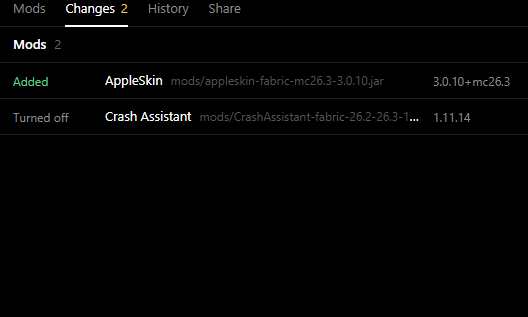
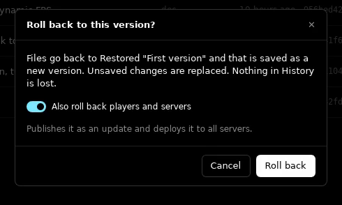
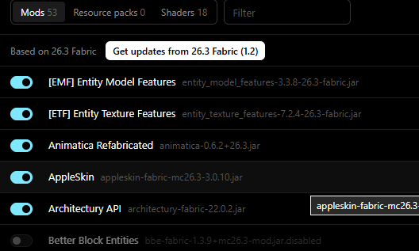
beacon server install sets up a server as a systemd service, a Docker container or a plain
folder with start.sh. Java and the loader are installed for you. Already running one?
beacon server import turns its mods and configs into a pack and leaves the world alone.
beacon server console -s Survival
beacon server cmd -s Survival whitelist add Steve
beacon server backups -s Survival create
beacon server stop | start | restart -s Survival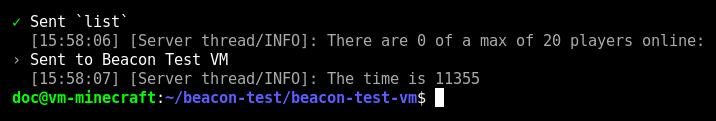
beacon server cmd prints the reply.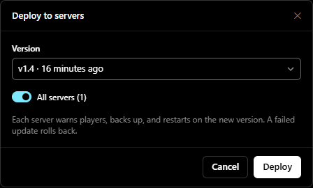
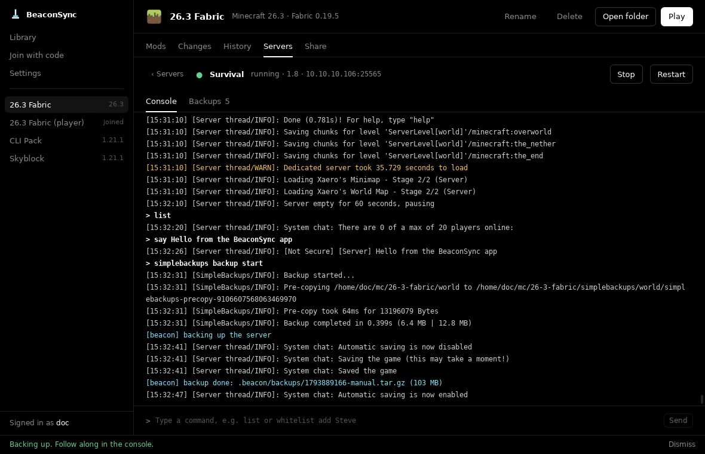
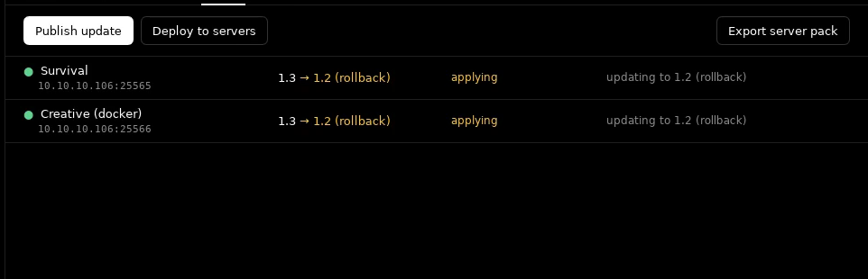
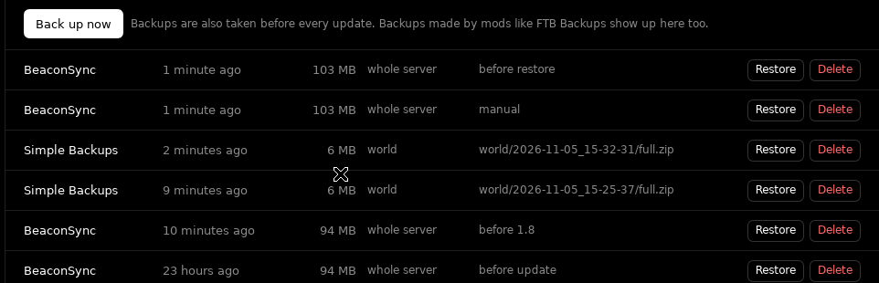
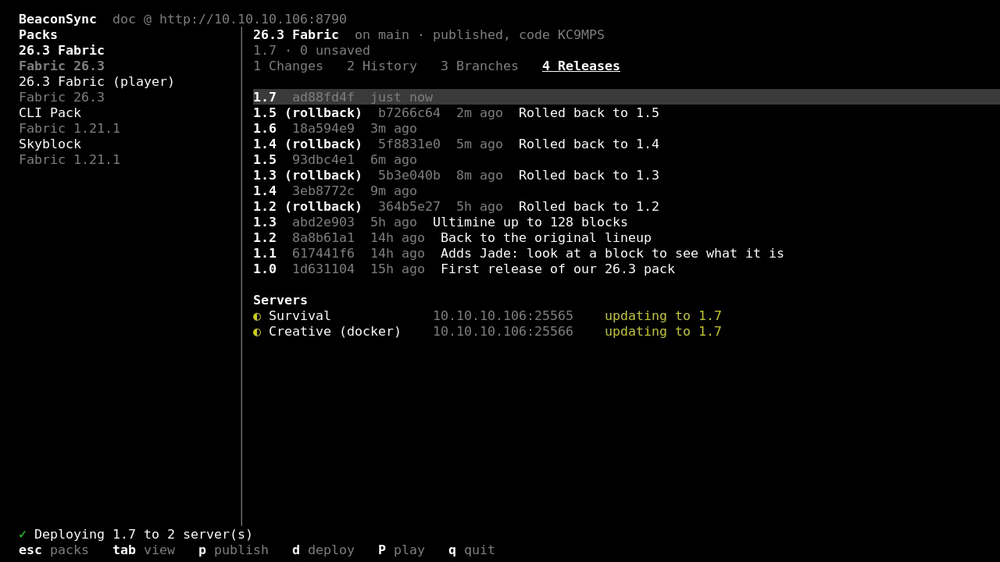
beacon alone for the full screen UI. Publish with p, deploy with
d.
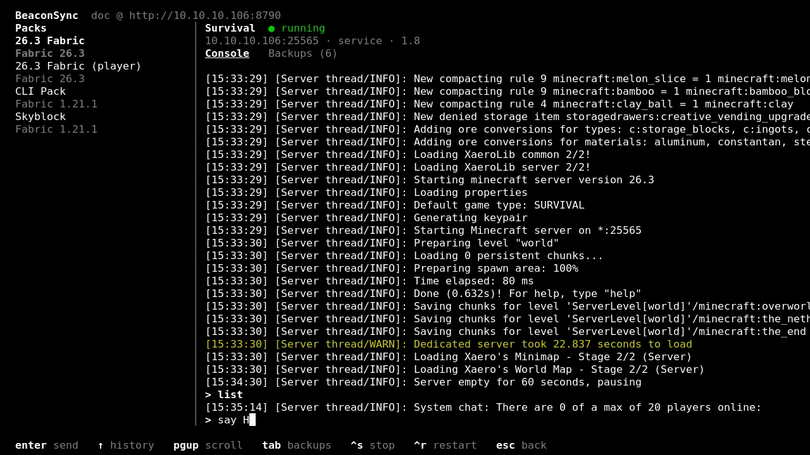
Friends paste a share code in the app and get your pack. From then on they get your updates when you publish.
/beacon pull. Configs and resource packs apply live. Mods wait for the
next restart.
The companion mod is Fabric only for now (Quilt loads it too), built for 1.21.1 and 26.3.
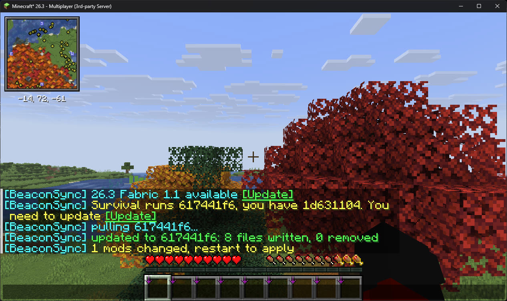
/beacon pull from chat.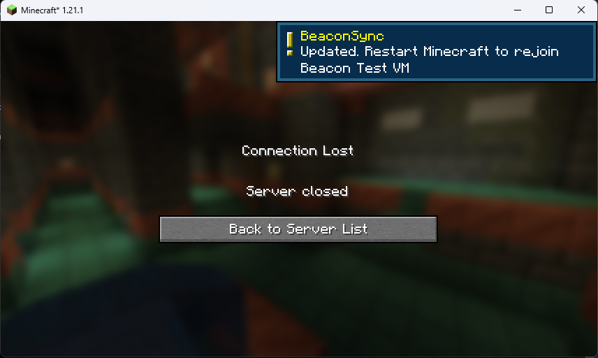
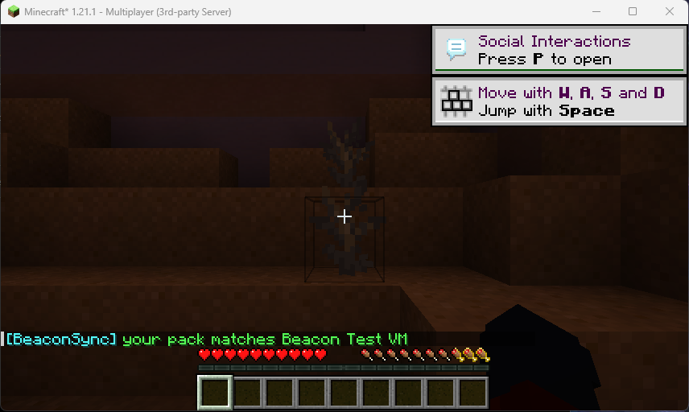
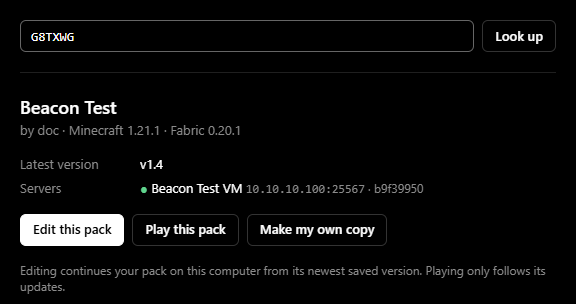
The hub keeps accounts, packs, releases and deploys, and it is the thing your servers listen to. It is one container or one binary, on your machine.
$ docker run -d -p 8787:8787 -v hub-data:/data \
-e BEACON_HUB_PUBLIC_URL=https://hub.example.com \
ghcr.io/realdoc06/beacon-hubbeacon-hub --data ./hub-data --addr 0.0.0.0:8787beacon login shows a code. Approve it in the app or at
<hub>/device.
Alpha. Everything here works end to end, but expect rough edges, and please report bugs.
beacon CLI$ curl -fsSL https://github.com/RealDoc06/beaconsync/releases/latest/download/install.sh | bashbeacon-x86_64-pc-windows-msvc.exe from
the release.
beacon login # approve the code in the app
beacon server install # pick the pack, then service / docker / plain
beacon server status # version, backups, hub state